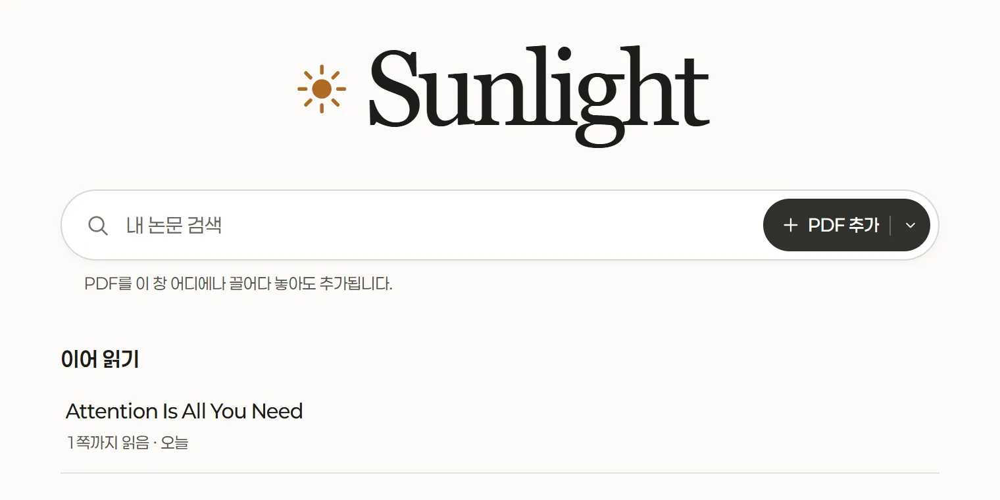
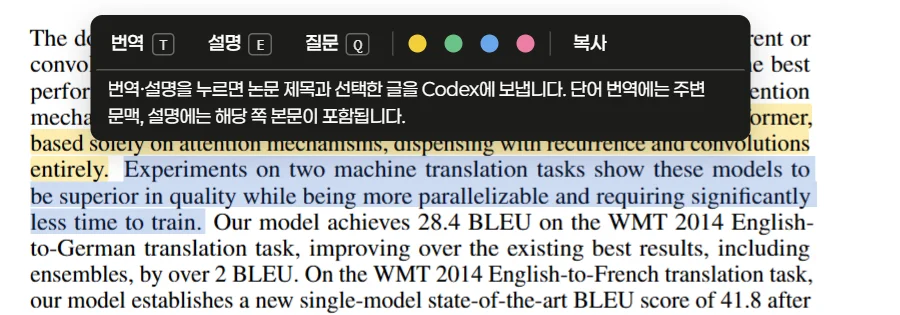
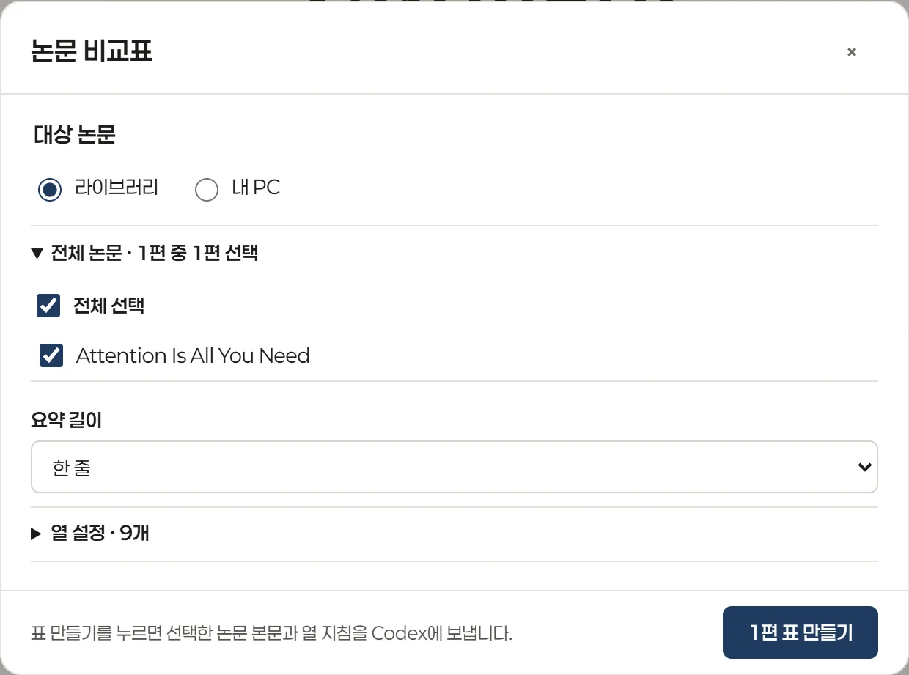

읽기와 메모
PDF를 열면 원문이 그대로 보입니다. 문장을 드래그하면 나오는 막대에서 색을 고르면 표시되고, 논문 도구 → 메모에 메모를 적을 수 있습니다.
다시 열면 읽던 쪽으로 돌아가고, 홈의 이어 읽기에 최근에 읽은 논문이 나옵니다. 읽기와 메모에는 AI 계정이 필요 없습니다.

설치하지 않고 쓰려면 압축 버전(ZIP, 19.4 MB)을 받아 쓰기 가능한 폴더에 모두 풀고 Sunlight.exe를 엽니다.

Windows용 64비트 설치파일을 받습니다.
브라우저가 파일을 막으면 다운로드 목록(Ctrl+J)을 엽니다. Chrome은 이 파일 옆의 계속, Edge는 ⋯ → 유지를 누릅니다. Edge가 한 번 더 물으면 자세히 표시 → 그래도 계속을 누릅니다. 문구는 브라우저 버전에 따라 조금 다를 수 있습니다.
받은 파일을 엽니다.
파란 창 Windows의 PC 보호가 나오면 추가 정보를 누른 뒤 실행을 누릅니다. 설치 폴더를 확인하고 설치를 누릅니다. 기본 폴더는 %LOCALAPPDATA%\Programs\Sunlight입니다.
Sunlight 열기를 누릅니다.
다음부터는 시작 메뉴에서 Sunlight를 엽니다. 홈에서 PDF 추가를 누르거나 PDF를 창에 끌어다 놓으면 바로 읽을 수 있습니다.
Sunlight 설치파일에는 유료 코드 서명 인증서가 없어서 Windows와 브라우저가 게시자를 확인할 수 없다고 표시합니다. 받은 파일이 온전한지는 아래 받은 파일 확인에서 비교할 수 있습니다. 설치한 뒤 앱 안에서 받는 업데이트는 발행자 서명을 확인한 파일만 설치됩니다.
이미 Sunlight를 쓰고 있다면 다시 받을 필요 없이 앱에서 업데이트합니다. 업데이트 방법
받은 파일의 SHA-256 값이 아래 값과 같으면 내려받는 동안 파일이 깨지지 않은 것입니다. 이 값도 같은 사이트에 있으므로 사이트 자체가 바뀐 경우까지 가려내지는 못합니다. 설치한 뒤의 업데이트는 앱이 발행자 서명으로 따로 확인합니다.
1.5.0 파일의 SHA-256
14994782b574e61fdefa5dfa7f21676eb62836686b785c5991169d138e0dcacdb6297ccb2dff6107e29ecd353d6c6328482fcf4a9ad8aef125994622a488c246받은 파일이 있는 폴더(보통 다운로드)를 파일 탐색기로 열고, 주소창에 powershell을 입력해 Enter를 누릅니다. 열린 창에 아래 명령을 붙여 넣고, 나온 Hash 값이 위의 값과 같은지 봅니다. ZIP을 받았다면 파일 이름을 바꿔 넣습니다.
Get-FileHash -Algorithm SHA256 .\Sunlight-Setup-1.5.0.exePDF를 열면 원문이 그대로 보입니다. 문장을 드래그하면 나오는 막대에서 색을 고르면 표시되고, 논문 도구 → 메모에 메모를 적을 수 있습니다.
다시 열면 읽던 쪽으로 돌아가고, 홈의 이어 읽기에 최근에 읽은 논문이 나옵니다. 읽기와 메모에는 AI 계정이 필요 없습니다.

번역, 요약, 설명, 질문은 내가 연결한 AI 서비스로 처리합니다. ⋯ → 설정에서 Codex, Claude, Gemini 중 쓰고 있는 서비스의 계정을 연결합니다. 사용량은 그 계정의 한도에서 차감됩니다.
버튼을 누르기 전에 무엇을 어느 서비스로 보내는지 그 자리에 표시됩니다. 필요한 내용만 보내고, 연결하지 않으면 아무것도 보내지 않습니다.

⋯ → 논문 비교표에서 논문을 고르고 표 만들기를 누르면 한 편당 한 행으로 정리합니다. 열 이름과 지침은 열 설정에서 바꿉니다.
결과는 앱에서 원문 근거와 함께 보고, Excel(.xlsx)이나 CSV로 저장할 수 있습니다. 선택한 논문의 본문과 열 지침이 연결한 AI로 전송됩니다.

휴대폰에서 라이브러리를 열고 PDF를 PC로 보낼 수 있습니다. PC가 켜져 있고 Sunlight가 실행 중이어야 합니다.

새 버전이 있으면 앱이 알려 줍니다. 직접 확인하려면 홈 오른쪽 위 ⋯ → 업데이트 확인을 누르고 다운로드 → 저장하고 설치 창 열기 → 업데이트를 차례로 누릅니다. 논문과 메모는 그대로 남습니다.
앱은 하루 한 번 이 사이트에서 작은 버전 목록을 확인하고, 발행자 서명이 맞는 파일만 설치합니다.
Windows 설정 → 앱 → 설치된 앱에서 Sunlight를 고르고 제거를 누릅니다. 논문·메모·설정은 기본으로 남겨 두므로 다시 설치하면 이어서 쓸 수 있습니다.
자료까지 지우려면 제거 창에서 논문·메모·설정(data 폴더)도 삭제를 선택합니다. 되돌릴 수 없으니 먼저 ⋯ → Windows 앱 관리 → 백업 및 복원으로 백업하세요. 압축 버전은 앱을 종료한 뒤 폴더를 지우면 됩니다.
특정 버전이 꼭 필요할 때만 받으세요. 평소에는 위의 최신 버전을 쓰면 됩니다. 더 새로운 버전에서 저장한 라이브러리는 이전 버전에서 열리지 않으므로, 바꾸기 전에 백업하세요.
아직 이전 버전이 없습니다.